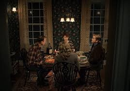
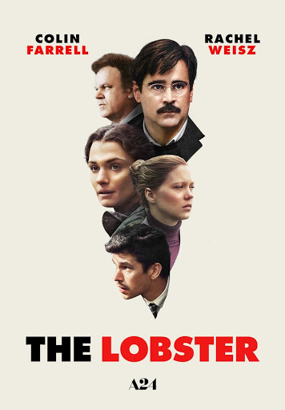
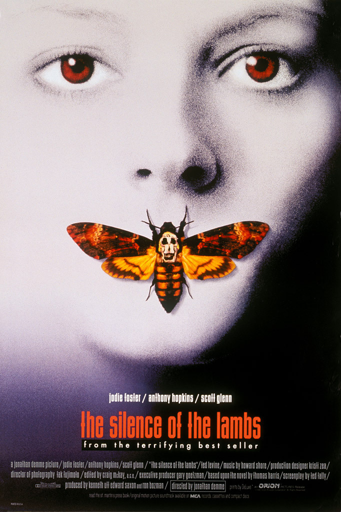
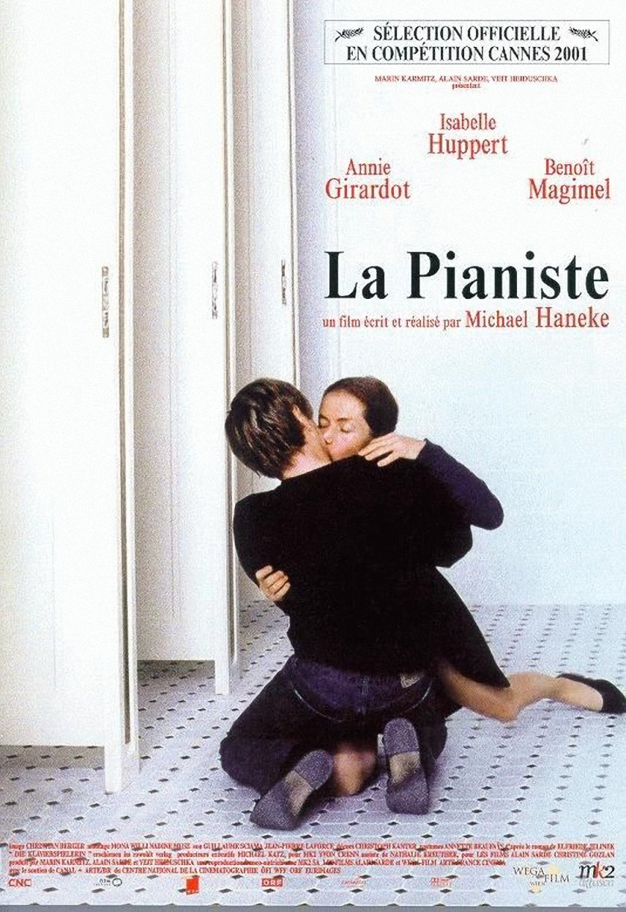
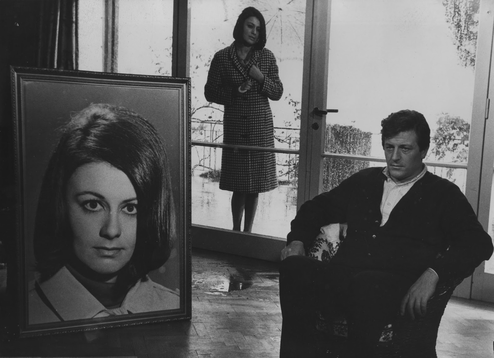

Ian Reid’in 2016 yılında yayınlanan aynı isimli romanından beyaz perdeye uyarlanan “I’m Thinking of Ending Things” birlikte uzun bir yola çıkan Jake ve kız arkadaşına odaklanıyor. Jake’in gözden ırak bir çiftlikte yaşayan ailesiyle tanışmaya hazırlanan kadın bir yandan da ilişkilerini bitirmeyi düşünmektedir. Jake beklenmedik bir şekilde farklı bir yola sapınca kız arkadaşı zor durumda kalır ve ikili arasında somut bir gerginlik, psikolojik bir kırılganlık ve saf bir korku hissi oluşur.
Çok da uzak olmayan bir gelecekten ilginç bir distopya öyküsü anlatıyor bize The Lobster. Yalnız kalmış, ilişkisi olmaya insanların tutuklandığı, alternatif bir gelecekte geçen öyküde, bekar insanlar korkunç bir otele yerleştirildikten 45 gün sonra, kendileriyle eşleşen kişiyle ilişkiye başlamak zorunda kalıyorlar. Eğer ki ilişkilerinde başarıyı yakalayamazlarsa, kendilerinin seçtikleri bir hayvana dönüştürülüyorlar! Dogtooth ile dikkatle üzerine çeken yetenekli Yunan asıllı yönetmen Yorgos Lanthimos'un kamera arkasına geçtiği film, alışılmışın oldukça dışında, ilginç bir distopya öyküsü sunuyor izleyiciye. Başrollerini Colin Farrell, Ben Whishaw, Rachel Weisz ve Lea Seydoux gibisi isimlerin paylaştığı film; distopya meraklılarının ilgisini çekecek gibi görünüyor!
Akademiyi başarıyla bitirmiş olan Clarice Starling artık genç bir FBI ajanıdır.Clarice, sapık bir katilin peşindedir.Katilin elinde bulunan bir kadını kurtarmaya çalışmaktadır.Bu katil, kurbanlarının derilerini yüzebilecek kadar psikopat bir sapıktır.Clarice, bu sapığa ulaşma amacıyla, bir başka psikopat olan ünlü Doktor Hannibal Lecter ile yakınlaşmak gerektiği yönünde bir plan yapar.Fakat, Clarice’in Lecter’dan alacağı bilgiler güvenini kazanmasına bağlıdır.Film, 1992 yılında 7 dalda Oscar’a aday oldu ve en iyi film ve en iyi senaryo uyarlaması dalında ödüle layık görüldü.Bu başarılı yapım, Hannibal Lecter serisinin 1.filmidir ve seride dört film daha yer almaktadır.Serinin diğer filmleri; The Silence of The Lambs(1991), Hannibal(2001), Red Dragon(2002), Hannibal Rising(2007) şeklinde sıralanmaktadır.
Film, 2004 yılında Nobel Edebiyat Ödülü'nü almış olan Elfriede Jelinek'in ''Die Klavierspielerin'' adlı romanından uyarlanmıştır. Burjuva toplumunu ve liberalizmi kıyasıya eleştiren, mercek altına alan bir baş yapıt. Bir çok film otoritesi tarafından 2000 sonrası çekilmiş Avrupa Sineması'na ki en iyi filmler arasında gösterilmektedir. Filmlerinde hemen hemen hiç müzik kullanmayan Michael Haneke'nin ''La Pianiste'' filminde, hem uyandırdığı romanda kendi seçimlerinde Franz Schubert başta olmak üzere piyanonun sesini duyarız. Filmi seyirciler için özel kılan şeylerden biriside, kadın ve erkek karakterlerin yarattıkları imajdan karşılıklı olarak etkilenip birbirleri ile temas kurduktan sonra iç dünyalarının karanlık yanlarını keşfetmeleriydi. Ayrıca yönetmen bu filmi için şu ifadeleri kullanmıştır. ''Haneke kendi sinemaıs için kimsenin içinin rahat bir şekilde izleyemeyeceği filmler yapıyorum.''
Türkiye Sineması'nın auteurlerinden Metin Erksan'ın sürreel başyapıtı olarak gösterilmektedir. Metin Erksan ''Sevmek Zamanı'' filmini anlatırken '' Son filmim, Uluslararası film yarışmaları için yapılmış tutarsız boş savlardan uzaktır. Sevmek zamanı sadece insanın dramını anlatır. '' ifadelerini kullanmıştır. Film siyah beyaz olarak çekilmiştir. Filmin konusu surete aşık olan bir adamın aşkıdır. Boyamaya girdiği evin duvarında asılı kadın resmine aşık olan boyacı Halil'in ve resmin sahibi olan Meral'in öyküsü anlatılır. Film çekildiği dönemde hikayesi, dağıtımcı problemleri, sinema anlayışı yüzünden gösterime girememiştir. Fakat, Aynı dönemin Avrupa Sineması'na paralel ve yenilikçi sinema dili sayesinde izleyenlerin filmi beğenmesiyle zamanla kült film haline gelmiştir. Günümüzde bile filmin gösterimi yapılmakta ve söyleyişiler düzenlenmektedir. Metin Erksan filmi öyle bir tutku ile çekmiştir ki 250.000 tl olan maliyeti 60.000 tl ye düşürmüştür. Filmin çekimlerini bitirebilmek için evindeki eşyaları satmıştır. Çekimleri Büyükada' da gerçekleştirilmiştir. Filmin dvd'si 2007 yılında ancak çıkımştır ve dvd kapağının arkasında ''Ticari gösterime girmemiş, sinema salonlarında oynama şansı bulamamıştır.'' yazmaktadır. Yönetmen Fatih Akın'ın çabaları sayesinde dvd formatında arşivlerde yerini alabilmiştir. Bazı film otoriteleri tarafından 1940'lı yıllarda yazılan Kürk Mantolu Madonna'nın filmi etkilemiş olduğu söylenmektedir.
